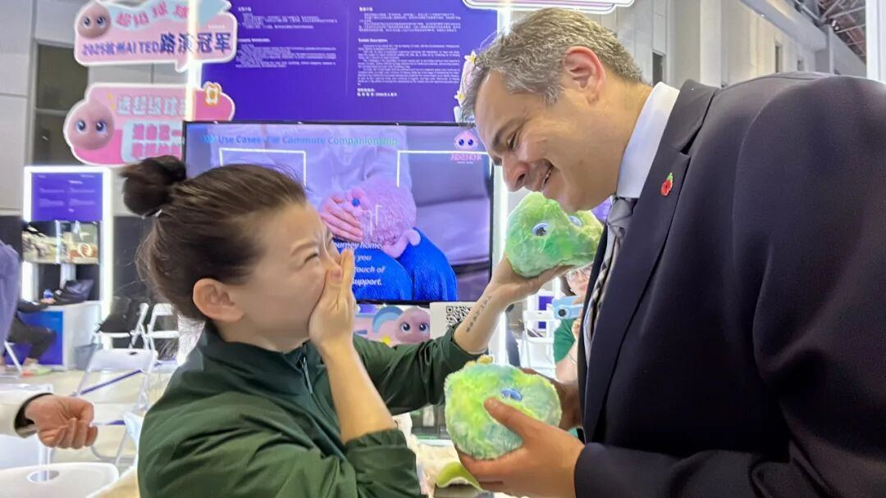
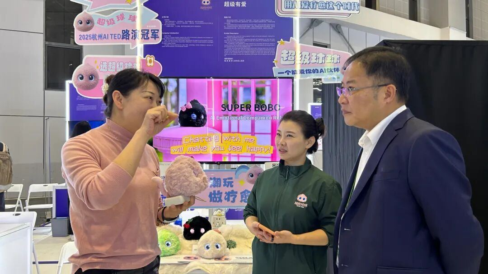
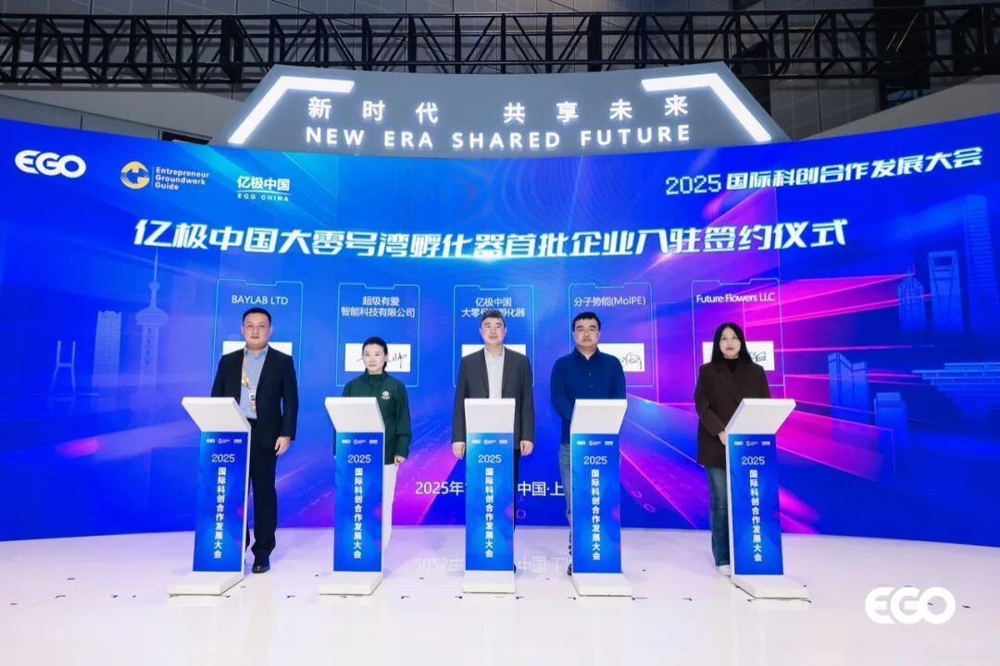
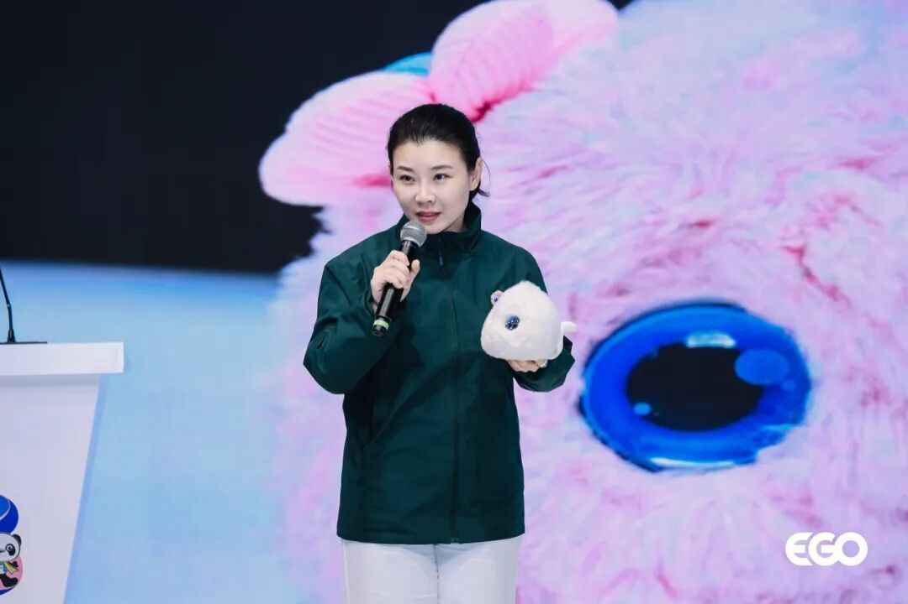

元晓帅博⼠为英国驻华贸易副使节施睿耀（Sohail Shaikh）先⽣展⽰超级球球的英语对话能⼒11⽉7⽇，上海市嘉定区江桥镇党委书记⽢永康，镇党委副书记、镇⻓⽅键等多位领导来到“超级球球”展台，考察了解⼈⼯智能技术在具体领域的应⽤。
超级有爱智能科技创始⼈元晓帅博⼠、⼼理专家郭凯燕博⼠向莅临领导介绍了“超级球球”的功能，以及在产品研发上的创新之处。团队希望帮助更多⼈摆脱情绪困扰、增进社会整体幸福感的发⼼与努⼒，得到了多位领导的⾸肯、⿎励。

上海市嘉定区江桥镇党委书记⽢永康（右⼀）参观超级球球展台，创始⼈元晓帅博⼠（中）与⼼理专家郭凯燕博⼠（左⼀）作产品介绍进博会期间，官⽅组展机构颐⾼国际还举办了“2025国际科创合作发展⼤会”。元晓帅博⼠代表“超级球球”项⽬与国际创新孵化平台签约，并作项⽬路演。

2025国际科创合作发展⼤会，元晓帅博⼠（左⼆）代表“超级球球”项⽬与国际创新孵化平台签约


2025国际科创合作发展⼤会，元晓帅博⼠代表“超级球球”项⽬进⾏路演此次在进博会上展出，是“超级球球”第⼆次参展重⼤展会。今年8⽉27⽇⾄29⽇，“超级球球”曾在IOTE深圳国际物联⽹展上⾸次公开亮相，并在直播平台与⽹友互动，线上线下均获得较⾼关注度。
“超级球球”团队成员介绍，在IOTE展出的，是“超级球球”的preview版，观众可以体验其主要功能。⽽这次进博会，他们带来的“超级球球”则离量产⼜近了⼀⼤步：“在最近两个⽉，我们对球球的产品细节体验做了进⼀步打磨，我们会在这个版本基础上向量产状态冲刺。”
创始⼈元晓帅博⼠表⽰，参展进博会，也是超级球球正式上市开售前的⼀次重要测试，团队⾮常重视：“通过和海内外的观众、意向合作⽅交流，我们可以获得对超级球球的第⼀⼿体验意⻅。⽽且这次我们开启了⼩范围的渠道预售和公测预售，能收集到更加真实的市场信息。从开展到⽬前的交流情况看，我对球球的市场前景很有信⼼！”